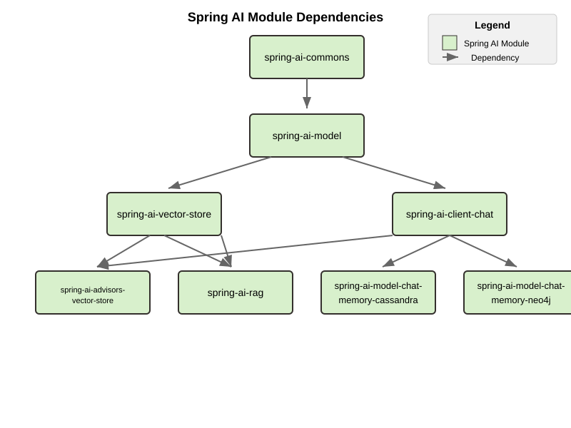

升级说明 #
升级到 1.0.0-SNAPSHOT #
概述 #
1.0.0-SNAPSHOT 版本包括对构件 ID、软件包名称和模块结构的重大更改。本节提供了特定于使用 SNAPSHOT 版本的指导。
添加 Snapshot 存储库 #
要使用 1.0.0-SNAPSHOT 版本，您需要将快照存储库添加到构建文件中。有关详细说明，请参阅入门指南中的[ 快照 - 添加快照存储库](getting-started.html#snapshots-add-snapshot-repositories)部分。
更新依赖项管理 #
在构建配置中将 Spring AI BOM 版本更新为 1.0.0-SNAPSHOT。有关配置依赖项管理的详细说明，请参阅 Getting Started guide 中的 [
Dependency Management](getting-started.html#dependency-management) 部分。
工件 ID、软件包和模块更改 #
1.0.0-SNAPSHOT 包括对构件 ID、软件包名称和模块结构的更改。 有关详细信息，请参阅：- [ 常见 Artifact ID 更改](#common-artifact-id-changes)
升级到 1.0.0-RC1 #
您可以使用 OpenRewrite 配方自动执行升级到 1.0.0-RC1 的过程。此配方有助于为此版本应用许多必要的代码更改。在 [ Arconia Spring AI Migrations]( https://github.com/arconia-io/arconia-migrations/blob/main/docs/spring-ai.md) 中查找配方和使用说明。
重大更改 #
聊天客户端和顾问 #
影响最终用户代码的主要更改包括：
- 在 VectorStoreChatMemoryAdvisor 中：
- 常量 CHAT_MEMORY_RETRIEVE_SIZE_KEY 已重命名为 TOP_K。
- 常量 DEFAULT_CHAT_MEMORY_RESPONSE_SIZE （值：100）已重命名为 DEFAULT_TOP_K，新的默认值为 20。
- 该常量 CHAT_MEMORY_CONVERSATION_ID_KEY 已重命名为 CONVERSATION_ID 并从 AbstractChatMemoryAdvisor 移动到 ChatMemory 接口。更新导入以使用 org.springframework.ai.chat.memory.ChatMemory.CONVERSATION_ID .
Advisor 中的自包含模板 #
执行提示增强的内置 advisor 已更新为使用自包含模板。目标是让每个 advisor 都能够执行模板作，而不会影响其他 advisor 的模板和提示决策，也不受其影响。 如果您为以下顾问提供自定义模板，则需要更新它们以确保包含所有预期的占位符。
- QuestionAnswerAdvisor 需要一个具有以下占位符的模板（查看更多详细信息 ）：
- 用于接收用户问题的查询占位符。
- 一个 question_answer_context 占位符，用于接收检索到的上下文。
- PromptChatMemoryAdvisor 需要具有以下占位符的模板（查看更多详细信息 ）：
- 用于接收原始系统消息的 Instructions 占位符。
- 一个 Memory 占位符，用于接收检索到的对话内存。
- VectorStoreChatMemoryAdvisor 需要具有以下占位符的模板（查看更多详细信息 ）：
- 用于接收原始系统消息的 Instructions 占位符。
- 用于接收检索到的对话内存的 long_term_memory 占位符。
可观察性 #
- 重构了内容观察以使用日志记录而不是跟踪 （ca843e8）
- 将内容观察过滤器替换为日志记录处理程序
- 重命名了配置属性以更好地反映其用途：
- 新增 TracingAwareLoggingObservationHandler 跟踪感知日志记录
- 替换为 micrometer-tracing-bridge-otel 千分尺跟踪
- 删除了基于事件的跟踪，以支持直接日志记录
- 删除了对 OTel SDK 的直接依赖
- 在观察属性（在 ChatClientBuilderProperties、ChatObservationProperties 和 ImageObservationProperties 中）中将 includePrompt 重命名为 logPrompt。
聊天内存存储库模块和自动配置重命名 #
我们通过在整个代码库中添加存储库后缀，对聊天内存组件的命名模式进行了标准化。为清楚起见，此更改会影响 Cassandra、JDBC 和 Neo4j 实现，从而影响工件 ID、Java 包名称和类名称。
工件 ID #
所有与内存相关的工件现在都遵循一致的模式：
- spring-ai-autoconfigure-model-chat-memory- spring-ai-autoconfigure-model-chat-memory-repository- →
- spring-ai-starter-model-chat-memory- spring-ai-starter-model-chat-memory-repository- →
Java 软件包 #
- 包路径现在包括 .repository。 段
- 示例： org.springframework.ai.chat.memory.jdbc → org.springframework.ai.chat.memory.repository.jdbc
配置类 #
- 主要的自动配置类现在使用 Repository 后缀
- 示例： JdbcChatMemoryAutoConfiguration → JdbcChatMemoryRepositoryAutoConfiguration
性能 #
- 配置属性已从 spring.ai.chat.memory.
… 重命名为 spring.ai.chat.memory.repository. … 需要迁移： - 更新您的 Maven/Gradle 依赖项以使用新的工件 ID。
- 更新使用旧软件包或类名称的任何导入、类引用或配置。
消息聚合器重构 #
变化 #
- MessageAggregator 类已从 org.springframework.ai.chat.model spring-ai-client-chat 模块中的包移动到 spring-ai-model 模块（相同的包名称）
- aggregateChatClientResponse 方法已从 MessageAggregator 中删除，并移动到 org.springframework.ai.chat.client 包中的新类 ChatClientMessageAggregator
迁移指南 #
如果你直接使用 MessageAggregator 中的 aggregateChatClientResponse 方法，则需要改用新的 ChatClientMessageAggregator 类：
// Before
new MessageAggregator().aggregateChatClientResponse(chatClientResponses, aggregationHandler);
// After
new ChatClientMessageAggregator().aggregateChatClientResponse(chatClientResponses, aggregationHandler);
不要忘记添加适当的导入：
import org.springframework.ai.chat.client.ChatClientMessageAggregator;
沃森 #
Watson AI 模型已被删除，因为它基于较旧的文本生成，该文本生成被认为已过时，因为有新的聊天生成模型可用。希望 Watson 能在未来版本的 Spring AI 中重新出现
MoonShot 和 QianFan #
Moonshot 和 Qianfan 已被删除，因为它们无法从中国境外访问。这些已移至 Spring AI Community 存储库。
删除了 Vector Store #
- 删除了 HanaDB 矢量存储自动配置 （f3b4624）
内存管理 #
- 删除了 CassandraChatMemory 实现 （11e3c8f）
- 简化了聊天内存顾问层次结构并删除了已弃用的 API （848a3fd）
- 删除了 JdbcChatMemory 中的弃用 （356a68f）
- 为清楚起见，重构了聊天内存存储库工件 （2d517ee）
- 为清楚起见，重构了聊天内存存储库自动配置和 Spring Boot 启动器 （f6dba1b）
消息和模板 API #
- 删除了已弃用的 UserMessage 构造函数 （06edee4）
- 删除了已弃用的 PromptTemplate 构造函数 （722c77e）
- 从媒体中删除了已弃用的方法 （228ef10）
- 重构了 StTemplateRenderer：将 supportStFunctions 重命名为 validateStFunctions （0e15197）
- 删除了移动 TemplateRender 接口后留下的 TemplateRender 接口 （52675d8）
其他客户端 API 更改 #
- 删除了 ChatClient 和 Advisor 中的弃用 （4fe74d8）
- 删除了 OllamaApi 和 AnthropicApi 的弃用 （46be898）
包结构更改 #
- 删除了 spring-ai-model 中的包间依赖关系循环 （ebfa5b9）
- 将 MessageAggregator 移动到 spring-ai-model 模块 （54e5c07）
依赖 #
- 删除了 spring-ai-openai 中未使用的 json-path 依赖项 （9de13d1）
行为更改 #
- 添加了具有干净自动配置的 Azure OpenAI 的 Entra ID 身份管理 （3dc86d3）
常规清理 #
- 删除了所有代码弃用 （76bee8c） 和 （b6ce7f3）
升级到 1.0.0-M8 #
您可以使用 OpenRewrite 配方自动执行到 1.0.0-M8 的升级过程。此配方有助于为此版本应用许多必要的代码更改。在 [ Arconia Spring AI Migrations]( https://github.com/arconia-io/arconia-migrations/blob/main/docs/spring-ai.md) 中查找配方和使用说明。
重大更改 #
从 Spring AI 1.0 M7 升级到 1.0 M8 时，以前注册工具回调的用户会遇到重大更改，这些更改会导致工具调用功能以静默方式失败。这特别影响使用已弃用的 tools（） 方法的代码。
例 #
下面是一个在 M7 中工作但在 M8 中不再按预期运行的代码示例：
// This worked in M7 but silently fails in M8
ChatClient chatClient = new OpenAiChatClient(api)
.tools(List.of(
new Tool("get_current_weather", "Get the current weather in a given location",
new ToolSpecification.ToolParameter("location", "The city and state, e.g. San Francisco, CA", true))
))
.toolCallbacks(List.of(
new ToolCallback("get_current_weather", (toolName, params) -> {
// Weather retrieval logic
return Map.of("temperature", 72, "unit", "fahrenheit", "description", "Sunny");
})
));
溶液 #
解决方案是使用 toolSpecifications（） 方法，而不是已弃用的 tools（） 方法：
// This works in M8
ChatClient chatClient = new OpenAiChatClient(api)
.toolSpecifications(List.of(
new Tool("get_current_weather", "Get the current weather in a given location",
new ToolSpecification.ToolParameter("location", "The city and state, e.g. San Francisco, CA", true))
))
.toolCallbacks(List.of(
new ToolCallback("get_current_weather", (toolName, params) -> {
// Weather retrieval logic
return Map.of("temperature", 72, "unit", "fahrenheit", "description", "Sunny");
})
));
已删除的实现和 API #
内存管理 #
- 删除了 CassandraChatMemory 实现 （11e3c8f）
- 简化了聊天内存顾问层次结构并删除了已弃用的 API （848a3fd）
- 删除了 JdbcChatMemory 中的弃用 （356a68f）
- 为清楚起见，重构了聊天内存存储库工件 （2d517ee）
- 为清楚起见，重构了聊天内存存储库自动配置和 Spring Boot 启动器 （f6dba1b）
客户端 API #
- 删除了 ChatClient 和 Advisor 中的弃用 （4fe74d8）
- 对 chatclient 工具调用的重大更改 （5b7849d）
- 删除了 OllamaApi 和 AnthropicApi 的弃用 （46be898）
消息和模板 API #
- 删除了已弃用的 UserMessage 构造函数 （06edee4）
- 删除了已弃用的 PromptTemplate 构造函数 （722c77e）
- 从媒体中删除了已弃用的方法 （228ef10）
- 重构了 StTemplateRenderer：将 supportStFunctions 重命名为 validateStFunctions （0e15197）
- 删除了移动 TemplateRender 接口后留下的 TemplateRender 接口 （52675d8）
模型实现 #
- 删除了 Watson 文本生成模型 （9e71b16）
- 删除了千帆代码 （bfcaad7）
- 删除了 HanaDB 矢量存储自动配置 （f3b4624）
- 从 OpenAiApi 中删除了 deepseek 选项 （59b36d1）
包结构更改 #
- 删除了 spring-ai-model 中的包间依赖关系循环 （ebfa5b9）
- 将 MessageAggregator 移动到 spring-ai-model 模块 （54e5c07）
依赖 #
- 删除了 spring-ai-openai 中未使用的 json-path 依赖项 （9de13d1）
行为更改 #
可观察性 #
- 重构了内容观察以使用日志记录而不是跟踪 （ca843e8）
- 将内容观察过滤器替换为日志记录处理程序
- 重命名了配置属性以更好地反映其用途：
- 新增 TracingAwareLoggingObservationHandler 跟踪感知日志记录
- 替换为 micrometer-tracing-bridge-otel 千分尺跟踪
- 删除了基于事件的跟踪，以支持直接日志记录
- 删除了对 OTel SDK 的直接依赖
- 在观察属性（在 ChatClientBuilderProperties、ChatObservationProperties 和 ImageObservationProperties 中）中将 includePrompt 重命名为 logPrompt。
- 添加了具有干净自动配置的 Azure OpenAI 的 Entra ID 身份管理 （3dc86d3）
常规清理 #
- 删除了 1.0.0-M8 （76bee8c） 中的所有弃用
- 常规弃用清理 （b6ce7f3）
升级到 1.0.0-M7 #
变更概述 #
Spring AI 1.0.0-M7 是 RC1 和 GA 版本之前的最后一个里程碑版本。它引入了对工件 ID、软件包名称和模块结构的几项重要更改，这些更改将在最终版本中保留。
工件 ID、软件包和模块更改 #
1.0.0-M7 包含与 1.0.0-SNAPSHOT 相同的结构更改。 有关详细信息，请参阅：- [ 常见 Artifact ID 更改](#common-artifact-id-changes)
MCP Java SDK 升级到 0.9.0 #
Spring AI 1.0.0-M7 现在使用 MCP Java SDK 版本 0.9.0，该版本与以前版本相比有重大变化。如果您在应用程序中使用 MCP，则需要更新代码以适应这些更改。 主要更改包括：
接口重命名 #
- DefaultMcpSession → McpClientSession 或 McpServerSession
- 所有 *注册类 → *规范类
服务器创建更改 #
- 使用 McpServerTransportProvider 而不是 ServerMcpTransport
// Before
ServerMcpTransport transport = new WebFluxSseServerTransport(objectMapper, "/mcp/message");
var server = McpServer.sync(transport)
.serverInfo("my-server", "1.0.0")
.build();
// After
McpServerTransportProvider transportProvider = new WebFluxSseServerTransportProvider(objectMapper, "/mcp/message");
var server = McpServer.sync(transportProvider)
.serverInfo("my-server", "1.0.0")
.build();
处理程序签名更改 #
现在，所有处理程序都接收 exchange 参数作为其第一个参数：
// Before
.tool(calculatorTool, args -> new CallToolResult("Result: " + calculate(args)))
// After
.tool(calculatorTool, (exchange, args) -> new CallToolResult("Result: " + calculate(args)))
通过 Exchange 进行客户端交互 #
以前在服务器上可用的方法现在通过 exchange 对象访问：
// Before
ClientCapabilities capabilities = server.getClientCapabilities();
CreateMessageResult result = server.createMessage(new CreateMessageRequest(...));
// After
ClientCapabilities capabilities = exchange.getClientCapabilities();
CreateMessageResult result = exchange.createMessage(new CreateMessageRequest(...));
根更改处理程序 #
// Before
.rootsChangeConsumers(List.of(
roots -> System.out.println("Roots changed: " + roots)
))
// After
.rootsChangeHandlers(List.of(
(exchange, roots) -> System.out.println("Roots changed: " + roots)
))
有关迁移 MCP 代码的完整指南，请参阅 [ MCP 迁移指南]( https://github.com/spring-projects/spring-ai/blob/main/spring-ai-docs/src/main/antora/modules/ROOT/pages/mcp-migration.adoc) 。
启用/禁用模型自动配置 #
之前用于启用/禁用模型自动配置的配置属性已被删除：
默认情况下，如果在 Classpath 上找到模型提供程序（例如 OpenAI、Ollama），则会启用其对相关模型类型（聊天、嵌入等）的相应自动配置。如果存在同一模型类型的多个提供程序（例如，同时 spring-ai-openai-spring-boot-starter 和 spring-ai-ollama-spring-boot-starter ），则可以使用以下属性来选择应处于活动状态的提供程序的自动配置，从而有效地禁用该特定模型类型的其他提供程序。
要完全禁用特定模型类型的自动配置，即使只有一个 provider 存在，也将相应的属性设置为与 Classpath 上的任何 provider 都不匹配的值（例如，none 或 disabled）。
你可以参考 [[SpringAIModels](https://github.com/spring-projects/spring-ai/blob/main/spring-ai-model/src/main/java/org/springframework/ai/model/SpringAIModels.java)](https://github.com/spring-projects/spring-ai/blob/main/spring-ai-model/src/main/java/org/springframework/ai/model/[SpringAIModels](https://github.com/spring-projects/spring-ai/blob/main/spring-ai-model/src/main/java/org/springframework/ai/model/SpringAIModels.java).java) 枚举，以获取已知的提供者值的列表。
使用 AI 自动升级 #
您可以使用 Claude Code CLI 工具在提供的提示下自动升级到 1.0.0-M7：
跨版本的常见更改 #
工件 ID 更改 #
Spring AI 启动器工件的命名模式已更改。您需要根据以下模式更新依赖项：
- 模型起动器： spring-ai-{model}-spring-boot-starter → spring-ai-starter-model-{model}
- Vector Store 起始剂： spring-ai-{store}-store-spring-boot-starter → spring-ai-starter-vector-store-{store}
- MCP 启动器： spring-ai-mcp-{type}-spring-boot-starter → spring-ai-starter-mcp-{type}
例子 #
对 Spring AI 自动配置工件的更改 #
Spring AI 自动配置已从单个整体工件更改为每个模型、矢量存储和其他组件的单个自动配置工件。进行此更改是为了最大程度地减少不同版本的依赖库冲突（例如 Google Protocol Buffers、Google RPC 等）的影响。通过将自动配置分离到特定于组件的构件中，您可以避免引入不必要的依赖项，并降低应用程序中版本冲突的风险。 原始的整体式构件不再可用：
<!-- NO LONGER AVAILABLE -->
<dependency>
<groupId>org.springframework.ai</groupId>
<artifactId>spring-ai-spring-boot-autoconfigure</artifactId>
<version>${project.version}</version>
</dependency>
相反，每个组件现在都有自己的 autoconfiguration artifact ，遵循以下模式：
- 模型自动配置： spring-ai-autoconfigure-model-{model}
- Vector Store 自动配置： spring-ai-autoconfigure-vector-store-{store}
- MCP 自动配置： spring-ai-autoconfigure-mcp-{type}
新的 Autoconfiguration 工件示例 #
程序包名称更改 #
您的 IDE 应有助于重构到新的包位置。
- KeywordMetadataEnricher 和 SummaryMetadataEnricher 已从 org.springframework.ai.transformer 移动到 org.springframework.ai.chat.transformer 。
- Content、MediaContent 和 Media 已从 org.springframework.ai.model 移动到 org.springframework.ai.content .
模块结构 #
该项目的模块和工件结构发生了重大变化。以前，spring-ai-core 包含所有中央接口，但现在它已被拆分为专门的域模块，以减少应用程序中不必要的依赖关系。

Base 模块，不依赖于其他 Spring AI 模块。包含： - 核心域模型（Document、TextSplitter） - JSON 实用程序和资源处理 - 结构化日志记录和可观测性支持
spring-ai-模型 #
提供 AI 功能抽象：- ChatModel、EmbeddingModel 和 ImageModel 等接口
- 消息类型和提示模板
- 函数调用框架（
ToolDefinition、ToolCallback）- 内容过滤和观察支持 统一的向量数据库抽象： - 用于相似性搜索的VectorStore接口 - 使用类似 SQL 的表达式进行高级筛选 - 用于内存中使用的 SimpleVectorStore- 嵌入的批处理支持 高级对话式 AI API： -ChatClient接口 - 通过ChatMemory实现对话持久性 - 使用
OutputConverter进行响应转换 - 基于 advisor 的拦截
- 同步和反应式流式处理支持
桥接 RAG 的矢量存储聊天： -
QuestionAnswerAdvisor：将上下文注入提示 -VectorStoreChatMemoryAdvisor：存储/检索对话历史记录ChatMemory的 Apache Cassandra 持久化： - CassandraChatMemory实现 - 使用 Cassandra 的 QueryBuilder 进行类型安全的 CQL ==== spring-ai-model-chat-memory-neo4j 用于聊天对话的 Neo4j 图形数据库持久性。
弹簧-ai-rag #
用于 Retrieval Augmented Generation 的综合框架： - RAG 管道的模块化架构 - RetrievalAugmentationAdvisor 作为主要入口点 - 具有可组合组件的函数式编程原则
依赖关系结构 #
依赖项层次结构可以概括为：
- spring-ai-commons（基础）
- spring-ai-model （取决于共享资源）
- spring-ai-vector-store 和 spring-ai-client-chat（都取决于模型）
- spring-ai-advisors-vector-store 和 spring-ai-rag（依赖于 client-chat 和 vector-store）
- spring-ai-model-chat-memory-* 模块（依赖于 client-chat）
ToolContext 更改 #
ToolContext 类已得到增强，可同时支持显式和隐式工具解析。工具现在可以是：
从 1.0.0-M7 开始，仅当在提示中明确请求或显式包含在调用中时，工具才会包含在对模型的调用中。
此外，ToolContext 类现在已被标记为 final，不能再扩展。它从来都不应该被子类化。您可以在实例化 ToolContext 时以 Map<String、Object> 的形式添加所需的所有上下文数据。有关更多信息，请查看 [documentation]（[
docs.spring.io/spring-ai/reference/api/tools.html#_tool_context](https://
docs.spring.io/spring-ai/reference/api/tools.html#_tool_context)）。
升级到 1.0.0-M6 #
对使用接口和 DefaultUsage 实现的更改 #
Usage 接口及其默认实现 DefaultUsage 发生了以下变化：
所需作 #
- 将对 getGenerationTokens（） 的所有调用替换为 getCompletionTokens（）
- 更新 DefaultUsage 构造函数调用：
JSON Ser/Deser 更改 #
虽然 M6 保持了 generationTokens 字段的 JSON 反序列化的向后兼容性，但此字段将在 M7 中删除。任何使用旧字段名称的持久 JSON 文档都应更新为使用 completionTokens。
新 JSON 格式的示例：
{
"promptTokens": 100,
"completionTokens": 50,
"totalTokens": 150
}
更改了 FunctionCallingOptions 在工具调用中的用法 #
每个 ChatModel 实例在构造时都接受一个可选的 ChatOptions 或 FunctionCallingOptions 实例，该实例可用于配置用于调用模型的默认工具。
1.0.0-M6 之前：
- 通过默认 FunctionCallingOptions 实例的 functions（） 方法传递的任何工具都包含在从该 ChatModel 实例对模型的每次调用中，可能会被运行时选项覆盖。
- 通过默认 FunctionCallingOptions 实例的 functionCallbacks（） 方法传递的任何工具都仅用于运行时动态解析（请参阅工具解析 ），但除非明确请求，否则永远不会包含在对模型的任何调用中。 从 1.0.0-M6 开始：
- 通过 functions（） 方法或默认 FunctionCallingOptions 的 functionCallbacks（） 传递的任何工具 实例现在以相同的方式处理：它包含在从该 ChatModel 实例对模型的每次调用中，可能会被运行时选项覆盖。因此，在对模型的调用中包含工具的方式是一致的，并防止由于 functionCallbacks（） 和所有其他选项之间的行为差异而导致任何混淆。 如果要使工具可用于运行时动态解析，并且仅在明确请求时将其包含在对模型的聊天请求中，则可以使用[ 工具解析](api/tools.html#_tool_resolution)中描述的策略之一。
删除已弃用的 Amazon Bedrock 聊天模型 #
从 1.0.0-M6 开始，Spring AI 过渡到使用 Amazon Bedrock 的 Converse API 来实现 Spring AI 中的所有聊天对话。除 Cohere 和 Titan 的嵌入模型外，所有 Amazon Bedrock Chat 模型都将被删除。
使用 Spring Boot 3.4.2 进行依赖项管理的更改 #
Spring AI 更新以使用 Spring Boot 3.4.2 进行依赖项管理。你可以[ 参考这里]( https://github.com/spring-projects/spring-boot/blob/v3.4.2/spring-boot-project/spring-boot-dependencies/build.gradle) ，了解 Spring Boot 3.4.2 管理的依赖项
所需作 #
- 如果要升级到 Spring Boot 3.4.2，请务必参考此文档，了解配置 REST 客户端所需的更改。值得注意的是，如果你在 Classpath 上没有 HTTP 客户端库，这可能会导致使用 JdkClientHttpRequestFactory，而 SimpleClientHttpRequestFactory 以前本来会使用的。要切换到使用 SimpleClientHttpRequestFactory ，您需要设置 spring.http.client.factory=simple 。
- 如果您使用的是不同版本的 Spring Boot（例如 Spring Boot 3.3.x）并且需要特定版本的依赖项，则可以在构建配置中覆盖它。
Vector Store API 更改 #
在版本 1.0.0-M6 中，VectorStore 接口中的 delete 方法已修改为 void 作，而不是返回 Optional<Boolean>。如果您的代码之前检查了 delete 作的返回值，则需要删除此检查。现在，如果删除失败，该作将引发异常，从而提供更直接的错误处理。
1.0.0-M6 之前： #
Optional<Boolean> result = vectorStore.delete(ids);
if (result.isPresent() && result.get()) {
// handle successful deletion
}
在 1.0.0-M6 及更高版本中： #
vectorStore.delete(ids);
// deletion successful if no exception is thrown
<dependency>
<groupId>org.springframework.ai</groupId>
<artifactId>spring-ai-vertex-ai</artifactId>
</dependency>
<dependency>
<groupId>org.springframework.ai</groupId>
<artifactId>spring-ai-vertex-ai-palm2</artifactId>
</dependency>
<dependency>
<groupId>org.springframework.ai</groupId>
<artifactId>spring-ai-vertex-ai-spring-boot-starter</artifactId>
</dependency>
<dependency>
<groupId>org.springframework.ai</groupId>
<artifactId>spring-ai-vertex-ai-palm2-spring-boot-starter</artifactId>
</dependency>
主分支将移至版本 0.8.0-SNAPSHOT。它会不稳定一两周。如果您不想处于最前沿，请使用 0.7.1-SNAPSHOT。
您可以像以前一样访问 0.7.1-SNAPSHOT 构件，并且仍然可以访问 0.7.1-SNAPSHOT 文档 。
0.7.1-SNAPSHOT 依赖项 #
- 开放人工智能